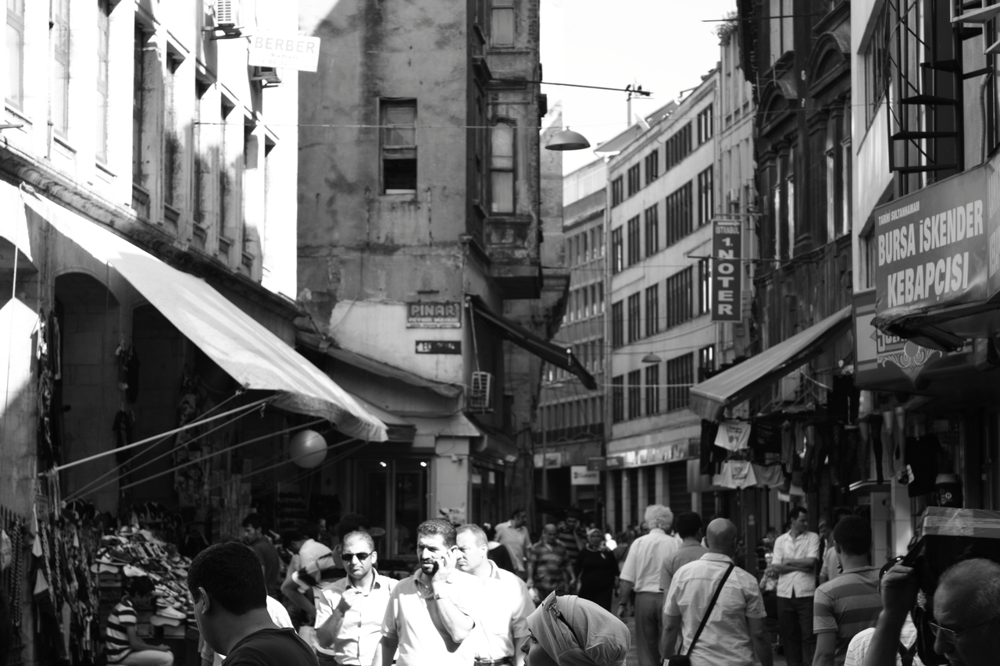

- Andrew Kitz
- Home
- Experience
- Interests

Hello, I’m Andrew.
My home is Corvallis, Oregon
My home is Corvallis, Oregon
One of my most rewarding personal interests is photography. While I enjoy photographing all manner of subjects, I most enjoy exploring the dichotomy of foreign urban settings and mountain landscape imagery, particularly of the landscapes of the mountainous regions of the American West.
For nearly 15 years, I have practiced the martial art of aikido. I received my first degree black belt in June 2013, after 5 years of intensive study, including time training in Japan. The art of aikido is derived from the ancient Samurai sword arts and is based on disarming and subduing an armed opponent while unarmed yourself.
Even since a roadtrip across the United States in January 2012, I have been enamoured with the American West. Upon moving to California in 2013, I immediately took to exploring the most demanding and remote landscapes in the Sierra Nevada mountains. My hiking expeditions serve as the motivation for my photography.